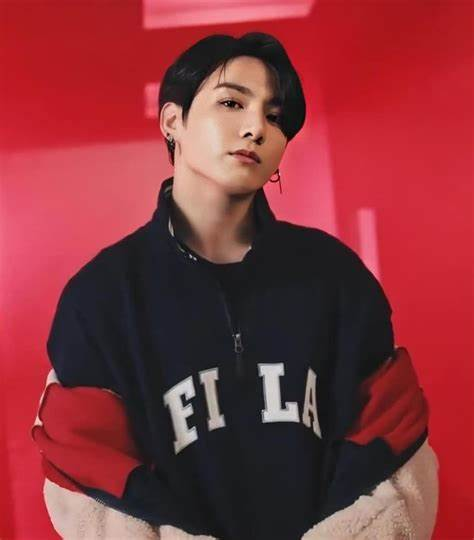
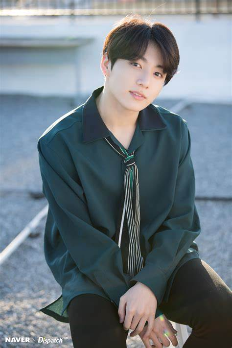

Jeon Jungkook, popularly known as Jungkook, is a South Korean singer, dancer, and songwriter born on September 1, 1997, in Busan, South Korea. From a young age, he showed an interest in music, performance, and the arts. He grew up with an older brother and was known to be a quiet yet curious child. His passion for singing began during his elementary school years, inspired by Korean and Western pop music. As he watched performances on TV and online, he began to imagine himself on stage, performing in front of thousands. He would often sing to himself, imitate dance moves he saw in videos, and develop a natural sense of rhythm and expression. Jungkook's passion for performance became more serious during his early teenage years. At the age of 13, he decided to audition for the Korean talent show Superstar K in 2011. Although he did not advance to the final rounds, his appearance caught the attention of multiple entertainment agencies. Despite receiving offers from some of the largest companies like JYP, Cube, and Starship, he chose to sign with Big Hit Entertainment, a relatively small agency at the time. He made this decision after being inspired by the words and leadership of RM, who was already a trainee there and would later become BTS's leader. Leaving his hometown of Busan to train in Seoul at such a young age was a major step. Jungkook lived away from his family and dedicated himself to his training under Big Hit's strict program. He underwent rigorous lessons in singing, dancing, and even rap, developing himself into an all-rounder. His potential was clear to his instructors and fellow trainees, who recognized his incredible work ethic and natural talent. Despite his age, he kept up with older trainees and consistently improved in every skill area. His journey from a shy kid in Busan to a confident performer in the making was both inspiring and challenging. As time went on, Jungkook developed into more than just a trainee. His strong sense of responsibility and ambition turned him into one of the most dependable members of BTS. He often stated that he looked up to his older members and wanted to learn from them, but over the years, fans and professionals alike began to see Jungkook as a role model himself. His transformation from a humble boy with a dream to a global icon is a story that continues to motivate fans worldwide.In 2022, Jung Kook featured on American singer Charlie Puth's single "Left and Right", which peaked at number 22 on the US Billboard Hot 100. Later that year, he became the first South Korean artist to release an official song for the FIFA World Cup soundtrack with "Dreamers", which he subsequently performed at the 2022 FIFA World Cup opening ceremony. In 2023, Jung Kook released his debut solo single "Seven" featuring Latto, which broke numerous chart and streaming records. It debuted at number one on the Billboard Hot 100, the Global 200, and the Global Excl. U.S. charts, making him the first Korean solo artist to do so, and eventually became the fastest song in history to surpass 1 billion streams on Spotify. His follow-up single "3D", featuring Jack Harlow, debuted at number five on both the Hot 100 and the UK Singles Chart, making Jung Kook the first South Korean solo artist to achieve two consecutive top-five entries on the latter.In 2011, Jung Kook auditioned for the South Korean talent show Superstar K during its auditions in Daegu.[6] Though he was not selected, he received casting offers from seven entertainment companies. He eventually chose to become a trainee under Big Hit Entertainment after seeing RM, now his fellow band member and leader in BTS, perform.[6] To work on his dance skills in preparation for his debut, he went to Los Angeles during the summer of 2012 to receive dance training from Movement Lifestyle.[7] In June 2012, he appeared in Jo Kwon's "I'm Da One" music video[8] and was a backup dancer for Glam before his debut.[9]
Jungkook's career officially began when BTS debuted on June 13, 2013, with the single “No More Dream” under Big Hit Entertainment. At the time of their debut, BTS was a hip-hop-influenced group, with strong messages about societal pressure, youth struggles, and identity. Jungkook was just 15 when they debuted, making him the youngest member. However, his maturity on stage and vocal strength made him stand out early on. As the group released more albums like O!RUL8,2?, Skool Luv Affair, and Dark & Wild, Jungkook continued to evolve as a performer, showcasing improved dance techniques and increasingly versatile vocals. As BTS started gaining international recognition between 2015 and 2017, Jungkook's popularity soared. During this time, his solo performances like “Begin” from WINGS and later “Euphoria” from Love Yourself: Answer became fan favorites. These songs were deeply personal, with “Begin” expressing his emotional journey as the youngest member and the bond he shares with his BTS brothers. His vocals carried emotional weight, and fans appreciated the vulnerability he brought to his solo tracks. Meanwhile, “Euphoria” became one of BTS's most-streamed solo songs, praised for its dreamy sound and uplifting lyrics. In 2023, Jungkook took a bold step by officially launching his solo career with the digital single “Seven” featuring American rapper Latto. The song blended pop with R&B and gained massive global attention, topping the Billboard Global 200 and Spotify charts in multiple countries. He followed this with his debut solo album Golden, released in November 2023, which included hits like “Standing Next to You,” “3D” (featuring Jack Harlow), and “Yes or No.” The album showcased Jungkook's range across genres like pop, funk, soul, and dance, proving that he wasn't just a K-pop idol but a global pop star with unique musical direction and identity. Jungkook also became the face of several international brands and was invited to perform at major events such as the Global Citizen Festival and FIFA World Cup ceremonies. His solo appearances on American and UK talk shows like The Tonight Show Starring Jimmy Fallon and BBC's The One Show introduced him to even wider audiences. His influence in the music industry, both as a group member and solo artist, is undeniable. From a trainee under a small company to a global headliner, Jungkook's career is a remarkable testament to dedication, talent, and evolution.In September 2015, Jung Kook participated in the "One Dream, One Korea" campaign, taking part in a song collaboration alongside various Korean artists in memory of the Korean War. The song was released on September 24 and presented at the One K Concert in Seoul on October 15.[23] The following year, Jung Kook was cast in the pilot episode of Flower Crew. He also appeared on Celebrity Bromance,[24][25] and competed on King of Mask Singer under the name "Fencing Man", appearing in episode 72.[26] On November 6, 2018, Jung Kook collaborated with American singer Charlie Puth for a special duet performance of the latter's "We Don't Talk Anymore" single at the MBC Plus X Genie Music Awards.[27] He released the self-produced song "Still With You" for free on SoundCloud on June 4, 2020, as part of BTS' annual debut anniversary celebrations.[28] In February 2022, Jung Kook sang the soundtrack for 7Fates: Chakho, a new BTS-based webtoon.[29] Titled "Stay Alive" and produced by bandmate Suga, the song earned Jung Kook his first solo entry on the Hot 100 with its debut at number 95,[30] and his first solo top-ten entry on the Billboard Global Excl. U.S chart at number eight;[31] it also became the first Korean soundtrack in history to debut on the UK Singles Chart, at number 89.[32] He released another self-produced song, "My You", for free on June 12 as part of BTS' ninth anniversary celebrations,[33] and appeared as a featured artist on the single "Left and Right" by Puth later that month.[34] On November 20, Jung Kook released the single "Dreamers" ahead of his performance at the opening ceremony for the 2022 FIFA World Cup in Qatar later that same day; the single was included on the tournament's official soundtrack album.[35] He headlined the event at Al Bayt Stadium, performing the song with Qatari singer Fahad Al Kubaisi;[36] he is the first Korean artist to sing an official theme for the World Cup and perform at an opening ceremony for the event.[37][38] Jung Kook was announced as the newest global ambassador for Calvin Klein in March 2023.[39] "Still With You" and "My You" were made available on streaming services worldwide as official singles under Jung Kook's name on July 3.[40] His debut solo single "Seven", featuring American rapper Latto, was released on July 14.[41] It debuted at number one on the Hot 100, the Global 200, and the Global Excl. US charts, making him the first Korean solo artist to simultaneously top all three charts and the second—after Jimin—to debut atop the Hot 100;[42][43] the song eventually became the fastest in history to surpass 1 billion streams on Spotify.[44] Jung Kook performed as a headliner at the Global Citizen Festival in Central Park, New York City on September 23.[45] His second solo single, "3D", featuring Jack Harlow, was released on September 29.[46] It debuted at number five on both the Hot 100[47] and the UK Singles Chart, making Jung Kook the first Korean solo artist to earn two top-five singles on the latter.[48] That same month, The Hollywood Reporter named Jung Kook in its inaugural "Platinum Players of Music" list, as one of the top 25 musicians that "defined the year in music."[49] The collaboration single "Too Much", with the Kid Laroi and Central Cee, followed in October.[50] "Too Much" debuted at number 10 in the UK, making Jung Kook the first Korean solo artist to achieve three top-10 singles in UK chart history.[51] His debut solo album Golden and a third single, "Standing Next to You", were released on November 3.[52] Golden set new all-time opening day and opening week sales records, with over 2.1 and 2.4 million copies respectively, and became the first album by a South Korean solo artist to surpass 2.5 million sales.[53][54] In the US, it debuted at number two on the Billboard 200, making Jung Kook one of the highest-charting South Korean solo artists in Billboard chart history, and the first to sell over 200,000 copies within a week.[54][55]
Despite the early start of his music career, Jungkook never neglected his education. After moving to Seoul to begin his training with Big Hit Entertainment, he transferred to the School of Performing Arts Seoul (SOPA), which is known for producing many idols and entertainers. At SOPA, Jungkook majored in Broadcasting and Entertainment, balancing his studies with his demanding idol training. He graduated in 2017, and fans celebrated his academic achievement as much as his musical milestones. He even attended the ceremony in his school uniform, showing humility and pride in his education. While studying at SOPA, Jungkook often had to juggle his time between school assignments and BTS activities, including recordings, performances, and overseas promotions. He rarely complained, however, and remained focused on doing well in both areas. Teachers and peers praised his polite personality and hard-working nature. Even as fame began to surround him, Jungkook stayed grounded and respectful to his classmates and instructors. His academic journey inspired many young fans, especially students who admired how he balanced fame with studies. After graduating from SOPA, Jungkook furthered his education by enrolling at Global Cyber University. There, he pursued a degree in Broadcasting and Entertainment, the same field he studied in high school. The university's flexible online format allowed him to study while continuing full-time schedules with BTS. His commitment to learning even amid global tours, album preparations, and media appearances highlighted his desire for personal growth. He has always stressed the importance of education and often encourages fans to stay curious and never stop learning. In 2022, he received the President's Award at his university graduation, an honor given to students who excel both academically and socially. This award recognized not just his academic performance but also his positive influence and contribution to Korean culture. Despite achieving global stardom, Jungkook's dedication to his education sets a powerful example for youth everywhere. His educational life reflects his belief that personal development should never stop, no matter how successful one becomes.
Jungkook's achievements are numerous, both as a member of BTS and as a solo artist. With BTS, he has topped the Billboard Hot 100 multiple times, performed at the Grammy Awards, and won awards from major ceremonies such as the Billboard Music Awards, American Music Awards, and MTV VMAs. BTS also received a cultural merit award from the South Korean government, making them the youngest recipients in history. As a core vocalist and performer, Jungkook's contributions have played a huge role in the group's success, especially in vocal-driven tracks and high-energy performances. Individually, Jungkook has broken multiple records. His solo single “Seven” topped Billboard's Global 200 and debuted at No. 1 on the US Billboard Hot 100 — a historic achievement for a Korean soloist. His songs like “Euphoria” and “Still With You” have millions of streams on platforms like Spotify and YouTube, despite being non-promoted tracks. He was named the most-searched K-pop idol on Google and YouTube for several consecutive years and ranked high in brand reputation indexes. His solo debut album Golden also broke first-week sales records for a K-pop soloist. Jungkook has also made an impact outside of music. He is frequently chosen as a brand ambassador for luxury and global fashion houses like Calvin Klein, and his influence drives trends in beauty, fashion, and lifestyle. His every appearance, from hair color to accessories, often sparks viral trends across social media. Jungkook's ability to connect with fans through music, visuals, and personality makes him one of the most powerful cultural influencers of his generation. His social media presence, especially his Instagram and livestreams, consistently attracts millions of viewers within minutes. Perhaps more importantly, Jungkook is known for his sincerity, humility, and strong work ethic, which have earned him deep respect in the industry. He often attributes his success to his fans (ARMYs) and his BTS members. From his teenage debut to his adult solo career, Jungkook continues to evolve, taking on new challenges and breaking boundaries. His journey from being the youngest member of a small-label group to a world-renowned global pop icon is a rare and inspiring story of perseverance, discipline, and passion.Jungkook's solo success has not only broken records but also redefined what a K-pop soloist can achieve on a global scale. In 2023, his debut solo single “Seven” became a massive global hit, debuting at No. 1 on the Billboard Hot 100, Global 200, and Global Excl. U.S. charts. This achievement made him the first Korean solo artist to simultaneously top all three charts. The song also broke streaming records, surpassing over 100 million streams on Spotify in just a few days — one of the fastest for any solo artist globally. These feats solidified Jungkook's reputation as not just a K-pop star but a mainstream global pop artist. His debut solo album Golden, released in November 2023, continued his streak of success. It sold over 2 million copies in its first week in South Korea, becoming the best-selling debut solo album in Korean history. Internationally, Golden entered the Top 10 on the Billboard 200, a rare feat for a non-English album. It also topped charts in countries like the UK, Japan, and Canada, demonstrating his cross-cultural appeal. The album's lead single “Standing Next to You” was praised for its retro funk vibe and smooth choreography, further establishing his musical identity outside of BTS. Jungkook's influence extends beyond music into the fashion and brand world. In 2023, he was officially announced as a global ambassador for Calvin Klein, leading campaigns that went viral across social media and fashion publications. Every item he wore sold out instantly, often referred to as the “Jungkook Effect.” He has also been featured in global magazines such as Vogue, Rolling Stone, and GQ, with many praising his sense of style, versatility, and cultural impact. Time and again, Jungkook has proven himself to be a trendsetter, admired not only for his voice and stage presence but also for his aesthetic choices and brand power. In digital media and influence rankings, Jungkook frequently ranks at the top. He has been the most-searched K-pop idol on Google for multiple years and holds several Guinness World Records, including “Fastest K-pop soloist to reach 1 billion Spotify streams.” His live streams and Instagram posts often reach millions of views in minutes, and hashtags related to him trend globally whenever he appears online. From record-breaking chart performances to influencing fashion, technology, and media trends — Jungkook's achievements are wide-reaching, making him one of the most impactful artists of his generation.
As of now, Jungkook is not married. Despite countless rumors and speculations from the media and fans, there has been no official confirmation of any romantic relationship or plans for marriage. Jungkook has remained very private about his personal life, choosing instead to focus on his music, career, and personal growth. In interviews and fan interactions, he has expressed that his current priority is his work and developing himself as an artist. While he has spoken about his thoughts on love and relationships in general terms, he has never publicly dated anyone. Over the years, Jungkook has been linked to several celebrities and influencers through rumors, but these have always remained unverified or denied by Big Hit Music. The idol culture in South Korea often places heavy expectations on privacy and professionalism, which is something Jungkook has respected. He maintains a careful boundary between his personal life and public persona, understanding the impact and attention his life attracts. Fans admire his maturity in handling these situations with grace and respect for everyone involved. When talking about his ideal type in the past, Jungkook mentioned he likes someone who is kind, intelligent, and confident — someone who shares his values and understands his lifestyle. He also values a strong emotional connection and someone who is passionate about their own life and work. However, he has also acknowledged that relationships can be difficult to maintain given the busy and unpredictable nature of his career. That said, he remains open to the possibility of love in the future, once the timing and circumstances are right. For now, Jungkook remains single and focused on his artistic journey. His relationship with fans, BTS members, and music continues to be his biggest passion. Many fans have also expressed support for his decision to keep his personal life private, believing that he deserves happiness on his own terms. Whether or not he decides to marry in the future, his fans are certain that Jungkook will always stay true to himself — humble, hard-working, and full of love for those who believe in him.
  See More -- >